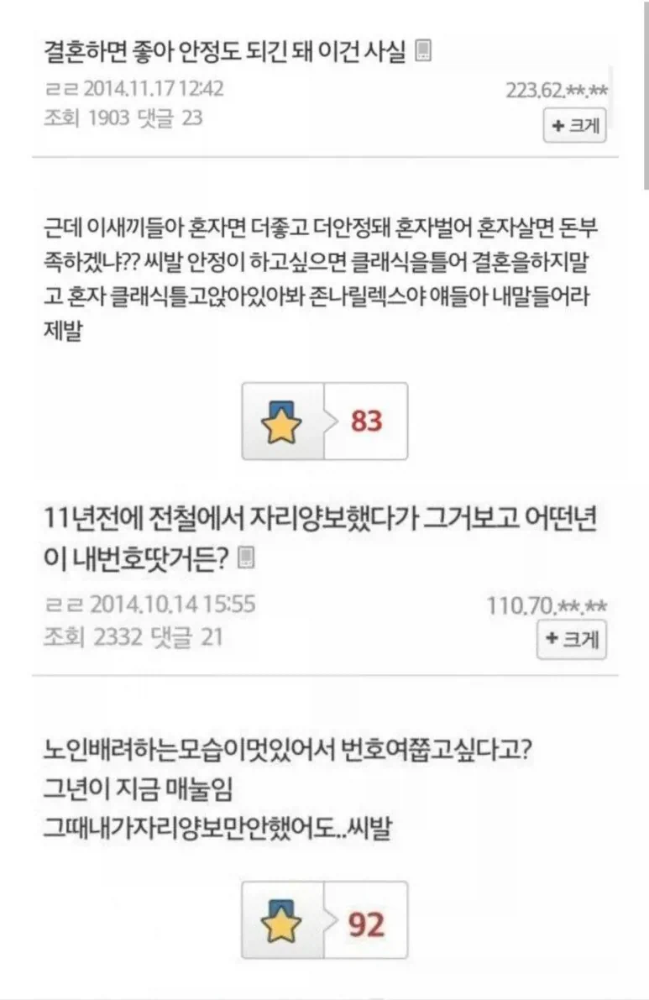
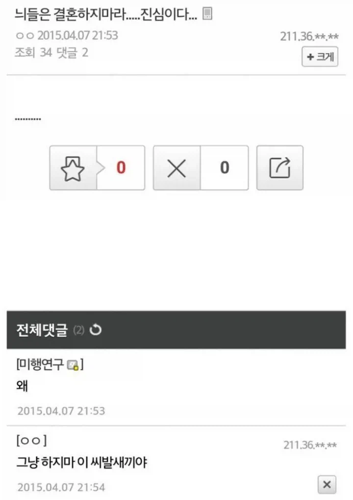

퐁퐁남햄들 설거지론 잠잠해지니까 버릇 바로 나오네 ㅋ
10년전글
근데, 딩크라면 결혼한게 돈은 더 모으는게 맞지
그건 아니야. 혼자 놀 땐 한계가 있지만 둘이 쓰기 시작하면 끝이 없어
안하는게 아니라 못하는건데 진짜좃같네
결혼을 쫓아서 하면 저렇게 되는 거라본다
괜찮은 사람 두명이 만나야지 살만하지 아니면
존나릴렉스야 ㅋㅋㅋㅋㅋㅋㅋㅋ
마지막이 진짜 너무 웃김
짤에서 쉰내나는거봐ㅋㅋ
요즘은 할수있으면 해보든가ㅋ
인거 같은데